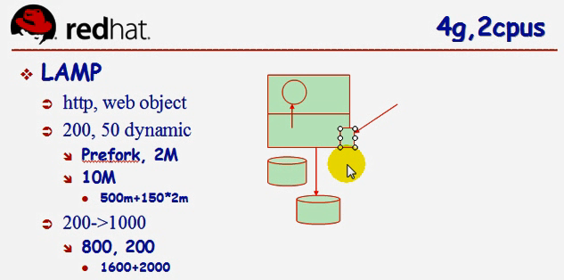
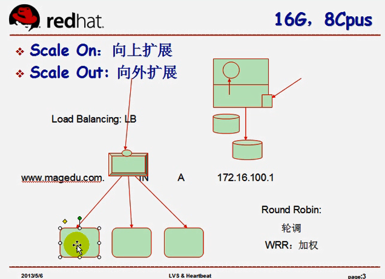
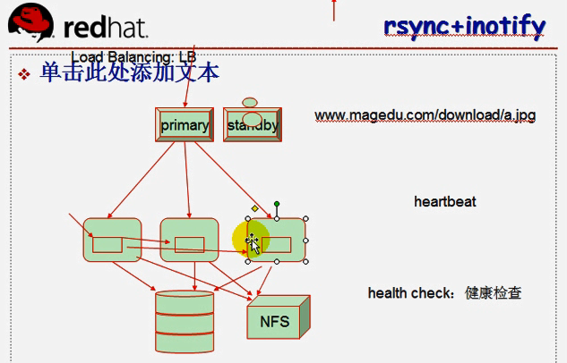
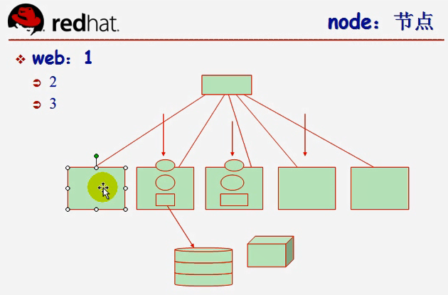
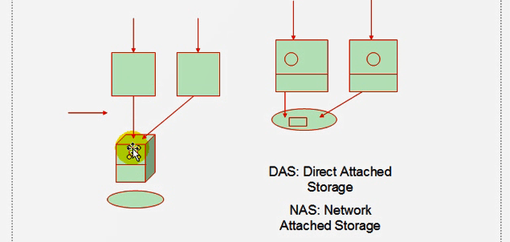
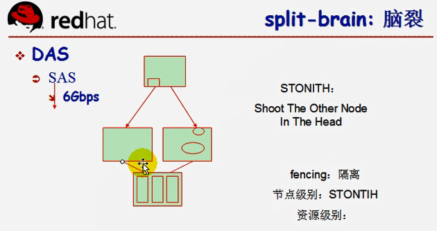
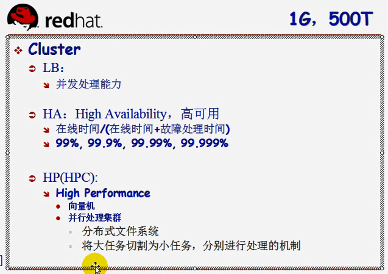
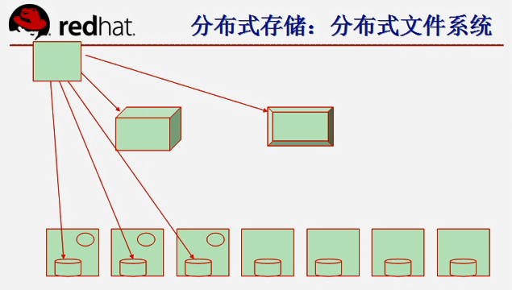

[TOC]

问题： - 什么是Prefork请求？ Apache 工作的三种模式：Prefork、Worker、Event

linux运维学习笔记：集群系列之01：linux集群基础概念
DNS负载均衡技术的实现原理是在DNS服务器中为同一个主机名配置多个IP地址，在应答DNS查询时，DNS服务器对每个查询将以DNS文件中主机记录的IP地址按顺序返回不同的解析结果，将客户端的访问引导到不同的机器上去，使得不同的客户端访问不同的服务器，从而达到负载均衡的目的。
大多数域名注册商都支持对统一主机添加多条A记录，这就是DNS轮询，DNS服务器将解析请求按照A记录的顺序，随机分配到不同的IP上，这样就完成了简单的负载均衡。
什么是域名的A记录？ 域名的A记录、mx记录、ns记录怎么查看
DNS负载均衡有什么缺点？
如何解决DNS负载均衡的缺点（服务器性能差异，负载不均匀，DNS缓存）？
Round Robin: 轮调：同一个客户端请求，并发的资源可能来自多台服务器。 WRR:weight Round Robin 加权轮调：解决服务器的硬件、性能有所差异。考虑公平以及效率，权重weight。能者多劳。

Linux负载均衡LVS原理技术详细讲解 LVS负载均衡（LVS简介、三种工作模式、十种调度算法）
附件：从多台主机上传附件，怎么存储？ NFS nfs文件共享服务器应用实战（一） nfs文件共享服务器应用实战（二）-自动挂载技术 nfs文件共享服务器企业实战（三）-nfs高可用 NFS 共享存储实战
静态文件如何同步更新？ rsync+inotify inotify+rsync实现实时同步
ftp的被动与主动模式是什么？ FTP的主动模式和被动模式工作原理及抓包分析
调度器过载怎么办？功能切分，比如：新浪子域名
调度器宕机怎么办？Master, Slave。备用调度器如何知道主调度器宕机？心跳
standy:具备和primary配置一样，IP地址进行切换，自己服务启动。 primary 和 standby时刻通信，发送heartbeat（心跳数）,一旦宕机，立即启动，进行切换。
调度器如何知道主机是否宕机？健康检查
负载均衡可以定期向后端服务器发送 Ping、尝试连接或发送请求来探测后端服务器运行的状况，这些探测称为健康检查。负载均衡通过健康检查来判断后端服务的可用性，避免后端服务异常影响前端业务，从而提高业务整体可用性。 负载均衡原理与实践详解 第六篇 健康检查机制详解（上）
负载均衡集群着重在于提供服务并发处理能力的集群，高可用集群以提升服务在线的能力的集群。高性能集群着重用于处理一个海量任务。
LB集群具有高可用的能力，但不是高可用集群。HA集群的主机之间要进行通信，发送heartbeat，以及宕机后，快速切换服务。而LB集群的高可用能力是通过上面的调度服务器调度来实现。
LB(Load Balancing)集群、HA(High Availability)集群、HP(High Performance)集群
可用性= 正常在线时间/正常在线时间+故障处理时间

在HA集群中要考虑哪些资源？
web服务器：primary：IP，web app, 页面----- standby：IP,web app,页面
在高可用集群中，如何充分利用standby主机资源？
web主机与mail主机互为standby。某一时刻某个资源只能被某个节点所占用。
主机宕机，采用哪个standby？
定义优先级，由协调员DC来决定选择谁。
主机如何通知standby自己还活着？
及时发送heartbeat，多播/组播，不能采用广播。

NFS 与 硬盘读写文件的区别？
硬盘是块级别读取，NFS是文件级别读写。
对于NFS与硬盘，两个程序同时写一个文件区别？
硬盘：无锁，错乱。NFS：有锁
linux高可用集群(HA)原理详解 LB/HA高可用 系列文章

DAS vs 1000mbps/8 --> NAS的传输远比不上DAS
RAID与NFS
NFS对前端服务器而言，就是文件共享服务器。数据请求是在文件级别上完成的。 RAID,是磁盘阵列，是通过主板上的总线连接到RAID上，相当于本地存储设备，数据是在块级别上交换的。
当standby发现主机宕机，如何无错抢占DAS设备？DAS如何解决split-brain(脑裂)问题？
由于没有及时传递heartbear信息，切换到备用的调度服务器，而主调度服务器还在写数据到DAS中，而standby也同时写同一个文件。左右就不协调了，称为split-brain:脑裂。
解决办法： （1）电源交换机（切断主机的电源），爆头STONITH(Shoot The Other Node In The Head) （2）fencing（隔离）：拒绝某一节点访问某一资源的机制，使服务器和存储设备断开。 隔离级别： 1.节点级别：STONTIN。 2.资源级别。
注意：为了防止脑裂,集群分裂，高可用集群至少有3个节点，奇数个节点，仲裁机制，少数服从多数。
补充： 脑裂：本来一个大脑的两半球互相配合，变成了分裂成两个独立的大脑，都认为对方已死。在集群环境中，有这么几种可能造成"Split-Brain"现象： 1、在集群环境中的节点间的心跳线同时断掉后，集群系统所处于的一种特殊状态。例如节点1和2组成一个集群，突然1和2间的心跳同时都断了，如果此前节点1正在运行应用，心跳都断掉后2开始去接管应用，强行加载数据，此时就是split-brain。 2、集群中节点因为处理器忙或者其他原因暂时停止响应时，其他节点可能误认为该节点“已死”。 后果：节点间争夺共享磁盘（即资源）的访问权，都对共享文件系统产生读写操作，从而导致共享磁盘文件系统损坏。 解决办法：使用硬盘心跳，scsi reservation，以及最极端的power fence。

并行计算集群两个基础是什么？
并行计算集群原理？
化整为零--->合并整合。 Map-Reduce 每台计算机只处理所有数据的一部分，且每台计算机上只存储一部分数据。每个节点既是计算节点，也是存储节点。
